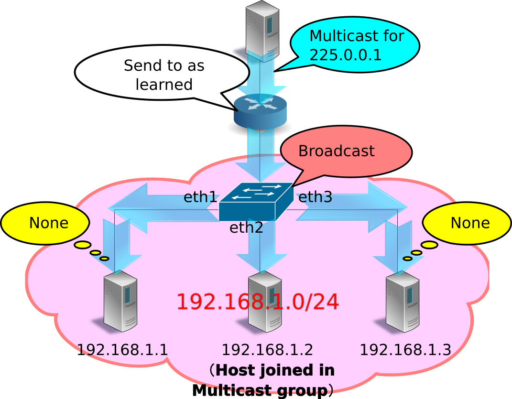
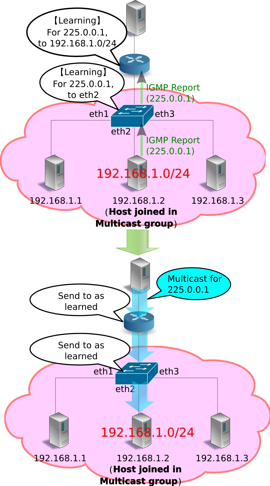
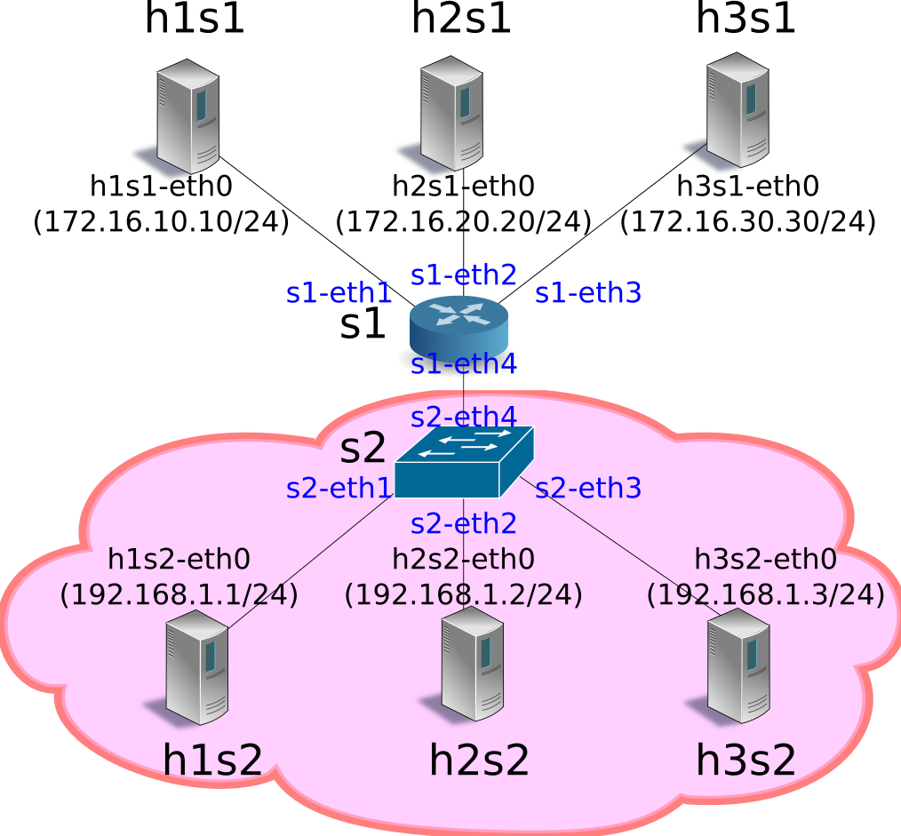

IGMP 스누핑¶
이 장에서는 Ryu 를 이용한 IGMP 스누핑 기능을 구현하는 방법을 설명 하고 있습니다.
IGMP 스누핑¶
IGMP 개요¶
IGMP (Internet Group Management Protocol) 는 서브넷 간에 멀티 캐스트 패킷의 목적지를 관리하기 위한 프로토콜입니다.
멀티 캐스트 라우터는 라우터가 연결된 모든 서브넷에 대해 멀티 캐스트 그룹 참여 호스트 가 있는지 여부를 주기적으로 요청 합니다 (IGMP Query Message). 멀티 캐스트 그룹 에 참여하는 호스트가 어떤 서브넷에 존재 하는 경우 해당 호스트는 어느 멀티 캐스트 그룹 에 참여하는지 멀티 캐스트 라우터 에 보고합니다 (IGMP Report Message) . 멀티 캐스트 라우터는 수신한 보고가 어느 서브넷에서 보내진 것인지를 기억하고 “어떤 멀티 캐스트 그룹에게 패킷을 어떤 서브넷으로 전달할지” 를 결정합니다. 질의에 대한 보고가 없거나 또는 특정 멀티 캐스트 그룹에서 탈퇴 메시지 ( IGMP Leave Message ) 를 호스트로부터 받은 경우 멀티 캐스트 라우터는 해당 서브넷 에 대한 모든, 또는 지정된 멀티 캐스트 그룹에게 패킷을 전달 하지 않습니다 .
이 방식은 멀티 캐스트 그룹 참여 호스트가 없는 서브넷에 대해 멀티 캐스트 패킷이 전송되지 않으며 따라서 불필요한 트래픽을 줄일 수 있습니다.

서브넷의 과제와 IGMP 스누핑 개요¶
IGMP를 사용하여 서브넷별로 불필요한 트래픽을 줄일 수 있었지만, 서브넷 내에서 여전히 불필요한 트래픽이 발생할 수 있습니다.
멀티 캐스트 패킷의 목적지 MAC 주소는 특수한 값이기 때문에 L2 스위치의 MAC 주소 테이블에서 학습되지 않고, 항상 브로드캐스트 대상이 됩니다. 따라서 예를 들어, 어느 하나의 포트에만 멀티 캐스트 그룹 참여 호스트가 연결되어 있었다고 해도, L2 스위치는 수신된 멀티 캐스트 패킷을 모든 포트로 전송하게 됩니다.
{kind=link}
IGMP 스누핑은 멀티 캐스트 그룹 참여 호스트에서 멀티 캐스트 라우터에 전송되는 IGMP Report Message를 L2 스위치에서 스누핑(snoop)하여 멀티캐스트 패킷의 대상 포트를 학습하는 방식입니다. 이 방법은 서브넷 내에서 멀티 캐스트 그룹 참여 호스트가 존재하지 않는 포트에 멀티 캐스트 패킷이 전송되는 것은 없기에 불필요한 트래픽을 줄일 수 있습니다.
{kind=link}
IGMP 스누핑을 하는 L2 스위치는 여러 호스트에서 동일한 멀티 캐스트 그룹에 참가하고 있다는 IGMP Report Message를 수신해도 쿼리는 1번 밖에 IGMP Report Message를 전송하지 않습니다. 또한 호스트에서 IGMP Leave Message 를 수신하고, 다른 동일한 멀티 캐스트 그룹에 참여하는 호스트가 존재하는 동안에는 쿼리로 IGMP Leave Message를 전송하지 않습니다. 이렇게 하면 쿼리는 마치 하나의 호스트와 IGMP 메시지를 교환하는 것처럼 보이게 할 수 있고, 또한 불필요한 IGMP 메시지의 전송을 억제할 수 있습니다.
Ryu 응용 프로그램 실행¶
IGMP 스누핑 기능을 OpenFlow를 이용하여 구현한 Ryu의 IGMP 스누핑 응용 프로그램을 실행해 봅니다.
Ryu 소스 트리에 포함되어있는 simple_switch_igmp.py는 OpenFlow 1.0 전용 응용 프로그램이기 때문에 여기에서는 새롭게 OpenFlow 1.3에 대응한 simple_switch_igmp_13.py을 만듭니다. 이 프로그램은 「 스위칭 허브 」에 IGMP 스누핑 기능을 추가한 응용 프로그램입니다. 또한 이 프로그램은 dpid = 0000000000000001 스위치를 멀티 캐스트 라우터로 취급하고, 포트 2에 연결되어있는 호스트를 멀티 캐스트 서버로 처리하도록 설정되어 있습니다.
소스 이름： simple_switch_igmp_13.py
from ryu.base import app_manager
from ryu.controller import ofp_event
from ryu.controller.handler import CONFIG_DISPATCHER
from ryu.controller.handler import MAIN_DISPATCHER
from ryu.controller.handler import set_ev_cls
from ryu.ofproto import ofproto_v1_3
from ryu.lib import igmplib
from ryu.lib.dpid import str_to_dpid
from ryu.lib.packet import packet
from ryu.lib.packet import ethernet
class SimpleSwitchIgmp13(app_manager.RyuApp):
OFP_VERSIONS = [ofproto_v1_3.OFP_VERSION]
_CONTEXTS = {'igmplib': igmplib.IgmpLib}
def __init__(self, *args, **kwargs):
super(SimpleSwitchIgmp13, self).__init__(*args, **kwargs)
self.mac_to_port = {}
self._snoop = kwargs['igmplib']
self._snoop.set_querier_mode(
dpid=str_to_dpid('0000000000000001'), server_port=2)
@set_ev_cls(ofp_event.EventOFPSwitchFeatures, CONFIG_DISPATCHER)
def switch_features_handler(self, ev):
datapath = ev.msg.datapath
ofproto = datapath.ofproto
parser = datapath.ofproto_parser
# install table-miss flow entry
#
# We specify NO BUFFER to max_len of the output action due to
# OVS bug. At this moment, if we specify a lesser number, e.g.,
# 128, OVS will send Packet-In with invalid buffer_id and
# truncated packet data. In that case, we cannot output packets
# correctly.
match = parser.OFPMatch()
actions = [parser.OFPActionOutput(ofproto.OFPP_CONTROLLER,
ofproto.OFPCML_NO_BUFFER)]
self.add_flow(datapath, 0, match, actions)
def add_flow(self, datapath, priority, match, actions):
ofproto = datapath.ofproto
parser = datapath.ofproto_parser
inst = [parser.OFPInstructionActions(ofproto.OFPIT_APPLY_ACTIONS,
actions)]
mod = parser.OFPFlowMod(datapath=datapath, priority=priority,
match=match, instructions=inst)
datapath.send_msg(mod)
@set_ev_cls(igmplib.EventPacketIn, MAIN_DISPATCHER)
def _packet_in_handler(self, ev):
msg = ev.msg
datapath = msg.datapath
ofproto = datapath.ofproto
parser = datapath.ofproto_parser
in_port = msg.match['in_port']
pkt = packet.Packet(msg.data)
eth = pkt.get_protocols(ethernet.ethernet)[0]
dst = eth.dst
src = eth.src
dpid = datapath.id
self.mac_to_port.setdefault(dpid, {})
self.logger.info("packet in %s %s %s %s", dpid, src, dst, in_port)
# learn a mac address to avoid FLOOD next time.
self.mac_to_port[dpid][src] = in_port
if dst in self.mac_to_port[dpid]:
out_port = self.mac_to_port[dpid][dst]
else:
out_port = ofproto.OFPP_FLOOD
actions = [parser.OFPActionOutput(out_port)]
# install a flow to avoid packet_in next time
if out_port != ofproto.OFPP_FLOOD:
match = parser.OFPMatch(in_port=in_port, eth_dst=dst)
self.add_flow(datapath, 1, match, actions)
data = None
if msg.buffer_id == ofproto.OFP_NO_BUFFER:
data = msg.data
out = parser.OFPPacketOut(datapath=datapath, buffer_id=msg.buffer_id,
in_port=in_port, actions=actions, data=data)
datapath.send_msg(out)
@set_ev_cls(igmplib.EventMulticastGroupStateChanged,
MAIN_DISPATCHER)
def _status_changed(self, ev):
msg = {
igmplib.MG_GROUP_ADDED: 'Multicast Group Added',
igmplib.MG_MEMBER_CHANGED: 'Multicast Group Member Changed',
igmplib.MG_GROUP_REMOVED: 'Multicast Group Removed',
}
self.logger.info("%s: [%s] querier:[%s] hosts:%s",
msg.get(ev.reason), ev.address, ev.src,
ev.dsts)
주석
다음 예에서는 멀티 캐스트 패킷 송수신에 VLC (http://www.videolan.org/vlc/)를 사용합니다. VLC 설치, 및 스트리밍 용 동영상을 구하는 관해서는 여기에서 설명하지 않습니다.
실험 환경 구축¶
IGMP 스누핑 응용 프로그램을 테스트하는 실험 환경을 구축합니다.
VM 이미지 사용을 위한 환경 설정 및 로그인 방법 등은 「 스위칭 허브 」을 참조하십시오.
먼저 Mininet를 이용하여 아래 그림과 같은 토폴로지를 만듭니다.
{kind=link}
mn 명령의 매개 변수는 다음과 같습니다.
| 매개변수 | 값 | 설명 |
|---|---|---|
| topo | linear,2,3 | 2 개의 스위치가 직접 연결되는 토폴로지 (각 스위치에 3 개의 호스트가 연결되는) |
| mac | 없음 | 자동으로 호스트의 MAC 주소를 설정 |
| switch | ovsk | Open vSwitch를 사용 |
| controller | remote | OpenFlow 컨트롤러는 외부의 것을 이용 |
| x | 없음 | xterm 시작 |
실행 예는 다음과 같습니다.
ryu@ryu-vm:~$ sudo mn --topo linear,2,3 --mac --switch ovsk --controller remote -x
*** Creating network
*** Adding controller
Unable to contact the remote controller at 127.0.0.1:6633
*** Adding hosts:
h1s1 h1s2 h2s1 h2s2 h3s1 h3s2
*** Adding switches:
s1 s2
*** Adding links:
(h1s1, s1) (h1s2, s2) (h2s1, s1) (h2s2, s2) (h3s1, s1) (h3s2, s2) (s1, s2)
*** Configuring hosts
h1s1 h1s2 h2s1 h2s2 h3s1 h3s2
*** Running terms on localhost:10.0
*** Starting controller
*** Starting 2 switches
s1 s2
*** Starting CLI:
mininet>
net 명령의 실행 결과는 다음과 같습니다.
mininet> net
h1s1 h1s1-eth0:s1-eth1
h1s2 h1s2-eth0:s2-eth1
h2s1 h2s1-eth0:s1-eth2
h2s2 h2s2-eth0:s2-eth2
h3s1 h3s1-eth0:s1-eth3
h3s2 h3s2-eth0:s2-eth3
s1 lo: s1-eth1:h1s1-eth0 s1-eth2:h2s1-eth0 s1-eth3:h3s1-eth0 s1-eth4:s2-eth4
s2 lo: s2-eth1:h1s2-eth0 s2-eth2:h2s2-eth0 s2-eth3:h3s2-eth0 s2-eth4:s1-eth4
c0
mininet>
IGMP 버전 설정¶
Ryu의 IGMP 스누핑 응용 프로그램은 IGMP v1/v2 만 지원합니다. 각 호스트가 IGMP v3을 사용하지 않도록 설정합니다. 이 명령 입력은 각 호스트의 xterm에서 실행해주세요.
host: h1s1:
root@ryu-vm:~# echo 2 > /proc/sys/net/ipv4/conf/h1s1-eth0/force_igmp_version
host: h1s2:
root@ryu-vm:~# echo 2 > /proc/sys/net/ipv4/conf/h1s2-eth0/force_igmp_version
host: h2s1:
root@ryu-vm:~# echo 2 > /proc/sys/net/ipv4/conf/h2s1-eth0/force_igmp_version
host: h2s2:
root@ryu-vm:~# echo 2 > /proc/sys/net/ipv4/conf/h2s2-eth0/force_igmp_version
host: h3s1:
root@ryu-vm:~# echo 2 > /proc/sys/net/ipv4/conf/h3s1-eth0/force_igmp_version
host: h3s2:
root@ryu-vm:~# echo 2 > /proc/sys/net/ipv4/conf/h3s2-eth0/force_igmp_version
IP 주소 설정¶
Mininet에 의해 자동으로 할당된 IP 주소는 모든 호스트가 같은 서브넷에 속해 있습니다. 다른 서브넷을 구축하기위해 각 호스트에서 IP 주소를 다시 할당합니다.
host: h1s1:
root@ryu-vm:~# ip addr del 10.0.0.1/8 dev h1s1-eth0
root@ryu-vm:~# ip addr add 172.16.10.10/24 dev h1s1-eth0
host: h1s2:
root@ryu-vm:~# ip addr del 10.0.0.2/8 dev h1s2-eth0
root@ryu-vm:~# ip addr add 192.168.1.1/24 dev h1s2-eth0
host: h2s1:
root@ryu-vm:~# ip addr del 10.0.0.3/8 dev h2s1-eth0
root@ryu-vm:~# ip addr add 172.16.20.20/24 dev h2s1-eth0
host: h2s2:
root@ryu-vm:~# ip addr del 10.0.0.4/8 dev h2s2-eth0
root@ryu-vm:~# ip addr add 192.168.1.2/24 dev h2s2-eth0
host: h3s1:
root@ryu-vm:~# ip addr del 10.0.0.5/8 dev h3s1-eth0
root@ryu-vm:~# ip addr add 172.16.30.30/24 dev h3s1-eth0
host: h3s2:
root@ryu-vm:~# ip addr del 10.0.0.6/8 dev h3s2-eth0
root@ryu-vm:~# ip addr add 192.168.1.3/24 dev h3s2-eth0
기본 게이트웨이 설정¶
각 호스트에서 IGMP 패킷이 성공적으로 보낼 수 있도록 기본 게이트웨이를 설정합니다.
host: h1s1:
root@ryu-vm:~# ip route add default via 172.16.10.254
host: h1s2:
root@ryu-vm:~# ip route add default via 192.168.1.254
host: h2s1:
root@ryu-vm:~# ip route add default via 172.16.20.254
host: h2s2:
root@ryu-vm:~# ip route add default via 192.168.1.254
host: h3s1:
root@ryu-vm:~# ip route add default via 172.16.30.254
host: h3s2:
root@ryu-vm:~# ip route add default via 192.168.1.254
OpenFlow 버전 설정¶
사용하는 OpenFlow 버전을 1.3으로 설정합니다. 이 명령을 스위치 s1, s2의 xterm에서 입력해주세요.
switch: s1 (root):
root@ryu-vm:~# ovs-vsctl set Bridge s1 protocols=OpenFlow13
switch: s2 (root):
root@ryu-vm:~# ovs-vsctl set Bridge s2 protocols=OpenFlow13
스위칭 허브의 실행¶
준비가 그래서 처음에 만든 Ryu 응용 프로그램을 실행합니다. 이 명령어 입력은 컨트롤러 c0의 xterm에서 실시해주세요.
controller: c0 (root):
root@ryu-vm:~# ryu-manager ./simple_switch_igmp_13.py
loading app ./simple_switch_igmp_13.py
loading app ryu.controller.ofp_handler
loading app ryu.controller.ofp_handler
instantiating app None of IgmpLib
creating context igmplib
instantiating app ./simple_switch_igmp_13.py of SimpleSwitchIgmp13
instantiating app ryu.controller.ofp_handler of OFPHandler
...
시작 후 바로 스위치 s1이 멀티 캐스트 라우터 (IGMP Query Message를 전송하기 때문에 쿼리라고도 함) 역할을 시작했다는 것을 나타내는 로그가 출력됩니다.
controller: c0 (root):
...
[querier][INFO] started a querier.
...
쿼리는 60 초에 한 번 IGMP Query Message를 모든 포트로 전송하여 IGMP Report Message가 표시된 포트에 대하여 멀티 캐스트 서버에서 멀티 캐스트 패킷을 전달하는 플로우 항목을 등록합니다.
동시에 쿼리 이외의 스위치에서 IGMP 패킷 스누핑이 시작됩니다.
controller: c0 (root):
...
[snoop][INFO] SW=0000000000000002 PORT=4 IGMP received. [QUERY]
...
위의 로그 쿼리는 스위치 s1에서 보낸 IGMP Query Message를 스위치 s2가 포트 4에서 수신한 것을 나타냅니다. 스위치 s2는 받은 IGMP Query Message를 브로드 캐스트합니다.
주석
스누핑의 준비가 있기 전에 쿼리기에서 처음 IGMP Query Message 가 전송될 수 있습니다. 이 경우 60 초 후에 보낸 다음 IGMP Query Message를 기다립니다.
멀티 캐스트 그룹 추가¶
이어 각 호스트를 멀티 캐스트 그룹에 참가합니다. VLC에서 특정 멀티 캐스트 주소로 보내는 스트림을 재생하려고 했을 때, VLC는 IGMP Report Message를 보냅니다.
호스트 h1s2를 225.0.0.1 그룹에 가입시킴¶
우선 호스트 h1s2에서 멀티 캐스트 주소 「225.0.0.1」에게 스트림을 재생하도록 설정합니다. VLC는 호스트 h1s2에서 IGMP Report Message를 보냅니다.
host: h1s2:
root@ryu-vm:~# vlc-wrapper udp://@225.0.0.1
스위치 s2는 호스트 h1s2에서 IGMP Report Message를 포트 1로 수신하여 멀티 캐스트 주소 「225.0.0.1」를 받는 그룹이 포트 1에 먼저 존재하는 것을 인식합니다.
controller: c0 (root):
...
[snoop][INFO] SW=0000000000000002 PORT=1 IGMP received. [REPORT]
Multicast Group Added: [225.0.0.1] querier:[4] hosts:[]
Multicast Group Member Changed: [225.0.0.1] querier:[4] hosts:[1]
[snoop][INFO] SW=0000000000000002 PORT=1 IGMP received. [REPORT]
[snoop][INFO] SW=0000000000000002 PORT=1 IGMP received. [REPORT]
...
위의 로그는 스위치 s2에있어서
- IGMP Report Message를 포트 1에서 받음
- 멀티 캐스트 주소 「225.0.0.1」을 수신하는 멀티 캐스트 그룹의 존재를 인식하는지 여부 (스위치가 대기 포트 4 먼저 존재)
- 멀티 캐스트 주소 「225.0.0.1」을 수신하는 그룹의 참여 호스트 포트 1 끝에 있는지 여부
를 나타냅니다. VLC는 시작할 때 IGMP Report Message를 3 회 보내도록 되어 있습니다.
이 후 쿼리기는 60 초에 한 번 IGMP Query Message를 계속 보내는 메시지를 수신하고 멀티 캐스트 그룹 참여 호스트 h1s2는 그때마다 IGMP Report Message를 전송합니다.
controller: c0 (root):
...
[snoop][INFO] SW=0000000000000002 PORT=4 IGMP received. [QUERY]
[snoop][INFO] SW=0000000000000002 PORT=1 IGMP received. [REPORT]
...
이 시점에서 쿼리기에 등록된 플로우 항목을 확인합니다.
switch: s1 (root):
root@ryu-vm:~# ovs-ofctl -O openflow13 dump-flows s1
OFPST_FLOW reply (OF1.3) (xid=0x2):
cookie=0x0, duration=827.211s, table=0, n_packets=0, n_bytes=0, priority=65535,ip,in_port=2,nw_dst=225.0.0.1 actions=output:4
cookie=0x0, duration=827.211s, table=0, n_packets=14, n_bytes=644, priority=65535,ip,in_port=4,nw_dst=225.0.0.1 actions=CONTROLLER:65509
cookie=0x0, duration=843.887s, table=0, n_packets=1, n_bytes=46, priority=0 actions=CONTROLLER:65535
쿼리기에
- 포트 2 (멀티 캐스트 서버)에서 225.0.0.1에게 패킷을 수신 한 경우에는
포트 4 (스위치 s2)로 전송
- 포트 4 (스위치 s2)에서 225.0.0.1에게 패킷을 수신 한 경우에는 Packet-In
하는
「 스위칭 허브 」와 같은 Table-miss 플로우 항목
세 가지 플로우 항목이 등록되어 있습니다.
또한 스위치 s2에 등록되어 있는 플로우 항목도 확인해 봅니다.
switch: s2 (root):
root@ryu-vm:~# ovs-ofctl -O openflow13 dump-flows s2
OFPST_FLOW reply (OF1.3) (xid=0x2):
cookie=0x0, duration=1463.549s, table=0, n_packets=26, n_bytes=1196, priority=65535,ip,in_port=1,nw_dst=225.0.0.1 actions=CONTROLLER:65509
cookie=0x0, duration=1463.548s, table=0, n_packets=0, n_bytes=0, priority=65535,ip,in_port=4,nw_dst=225.0.0.1 actions=output:1
cookie=0x0, duration=1480.221s, table=0, n_packets=26, n_bytes=1096, priority=0 actions=CONTROLLER:65535
스위치 s2에
- 포트 1 (호스트 h1s2)에서 225.0.0.1에게 패킷을 수신 한 경우에는 Packet-In
하는
- 포트 4 (쿼리 기)에서 225.0.0.1에게 패킷을 수신 한 경우에는 포트 1 (포스
트 h1s2)로 전송
「 스위칭 허브 」와 같은 Table-miss 플로우 항목
세 가지 플로우 항목이 등록되어 있습니다.
호스트 h3s2를 225.0.0.1 그룹에 가입시킴¶
이어 호스트 h3s2에서도 멀티 캐스트 주소 「225.0.0.1」에게 스트림을 재생하도록 설정합니다. VLC는 호스트 h3s2에서 IGMP Report Message를 보냅니다.
host: h3s2:
root@ryu-vm:~# vlc-wrapper udp://@225.0.0.1
스위치 s2는 호스트 h3s2에서 IGMP Report Message를 포트 3에서 수신하고 멀티 캐스트 주소 「225.0.0.1」를 수신하는 그룹의 참여 호스트가 포트 1의 다른 포트 3 끝에도 존재함을 인식합니다.
controller: c0 (root):
...
[snoop][INFO] SW=0000000000000002 PORT=3 IGMP received. [REPORT]
Multicast Group Member Changed: [225.0.0.1] querier:[4] hosts:[1, 3]
[snoop][INFO] SW=0000000000000002 PORT=3 IGMP received. [REPORT]
[snoop][INFO] SW=0000000000000002 PORT=3 IGMP received. [REPORT]
...
이 시점에서 쿼리기에 등록된 플로우 항목을 확인합니다.
switch: s1 (root):
root@ryu-vm:~# ovs-ofctl -O openflow13 dump-flows s1
OFPST_FLOW reply (OF1.3) (xid=0x2):
cookie=0x0, duration=1854.016s, table=0, n_packets=0, n_bytes=0, priority=65535,ip,in_port=2,nw_dst=225.0.0.1 actions=output:4
cookie=0x0, duration=1854.016s, table=0, n_packets=31, n_bytes=1426, priority=65535,ip,in_port=4,nw_dst=225.0.0.1 actions=CONTROLLER:65509
cookie=0x0, duration=1870.692s, table=0, n_packets=1, n_bytes=46, priority=0 actions=CONTROLLER:65535
쿼리기에 등록된 플로우 항목에 특별한 변경은 없습니다.
또한 스위치 s2에 등록되어 있는 플로우 항목도 확인 해 봅니다.
switch: s2 (root):
root@ryu-vm:~# ovs-ofctl -O openflow13 dump-flows s2
OFPST_FLOW reply (OF1.3) (xid=0x2):
cookie=0x0, duration=1910.703s, table=0, n_packets=34, n_bytes=1564, priority=65535,ip,in_port=1,nw_dst=225.0.0.1 actions=CONTROLLER:65509
cookie=0x0, duration=162.606s, table=0, n_packets=5, n_bytes=230, priority=65535,ip,in_port=3,nw_dst=225.0.0.1 actions=CONTROLLER:65509
cookie=0x0, duration=162.606s, table=0, n_packets=0, n_bytes=0, priority=65535,ip,in_port=4,nw_dst=225.0.0.1 actions=output:1,output:3
cookie=0x0, duration=1927.375s, table=0, n_packets=35, n_bytes=1478, priority=0 actions=CONTROLLER:65535
스위치 s2에
- 포트 1 (호스트 h1s2)에서 225.0.0.1에게 패킷을 수신한 경우에는 Packet-In
하는
- 포트 3 (호스트 h3s2)에서 225.0.0.1에게 패킷을 수신한 경우에는 Packet-In
하는
- 포트 4 (쿼리 기)에서 225.0.0.1에게 패킷을 수신한 경우에는 포트 1 (포스
트 h1s2) 및 포트 3 (호스트 h3s2)로 전송
「 스위칭 허브 」와 같은 Table-miss 플로우 항목
4 개의 플로우 항목이 등록되어 있습니다.
호스트 h2s2를 225.0.0.2 그룹에 가입시킴¶
그런 다음 호스트 h2s2는 다른 호스트와는 다른 멀티 캐스트 주소 「225.0.0.2」 에게 스트림을 재생하도록 설정합니다. VLC는 호스트 h2s2에서 IGMP Report Message를 보냅니다.
host: h2s2:
root@ryu-vm:~# vlc-wrapper udp://@225.0.0.2
스위치 s2는 호스트 h2s2에서 IGMP Report Message를 포트 2에서 수신 멀티 캐스트 주소 “225.0.0.2”을 수신하는 그룹 참여 호스트가 포트 2 먼저 존재하는 것을 인식합니다.
controller: c0 (root):
...
[snoop][INFO] SW=0000000000000002 PORT=2 IGMP received. [REPORT]
Multicast Group Added: [225.0.0.2] querier:[4] hosts:[]
Multicast Group Member Changed: [225.0.0.2] querier:[4] hosts:[2]
[snoop][INFO] SW=0000000000000002 PORT=2 IGMP received. [REPORT]
[snoop][INFO] SW=0000000000000002 PORT=2 IGMP received. [REPORT]
...
이 시점에서 쿼리기에 등록된 플로우 항목을 확인합니다.
switch: s1 (root):
root@ryu-vm:~# ovs-ofctl -O openflow13 dump-flows s1
OFPST_FLOW reply (OF1.3) (xid=0x2):
cookie=0x0, duration=2289.168s, table=0, n_packets=0, n_bytes=0, priority=65535,ip,in_port=2,nw_dst=225.0.0.1 actions=output:4
cookie=0x0, duration=108.374s, table=0, n_packets=2, n_bytes=92, priority=65535,ip,in_port=4,nw_dst=225.0.0.2 actions=CONTROLLER:65509
cookie=0x0, duration=108.375s, table=0, n_packets=0, n_bytes=0, priority=65535,ip,in_port=2,nw_dst=225.0.0.2 actions=output:4
cookie=0x0, duration=2289.168s, table=0, n_packets=38, n_bytes=1748, priority=65535,ip,in_port=4,nw_dst=225.0.0.1 actions=CONTROLLER:65509
cookie=0x0, duration=2305.844s, table=0, n_packets=2, n_bytes=92, priority=0 actions=CONTROLLER:65535
쿼리기에는
- 포트 2 (멀티 캐스트 서버)에서 225.0.0.1에게 패킷을 수신 한 경우에는
포트 4 (스위치 s2)로 전송
- 포트 4 (스위치 s2)에서 225.0.0.2에게 패킷을 수신 한 경우에는 Packet-In
수행
- 포트 2 (멀티 캐스트 서버)에서 225.0.0.2에게 패킷을 수신 한 경우에는
포트 4 (스위치 s2)로 전송
- 포트 4 (스위치 s2)에서 225.0.0.1에게 패킷을 수신 한 경우에는 Packet-In
수행
「 스위칭 허브 」와 같은 Table-miss 플로우 항목
5 개의 플로우 항목이 등록되어 있습니다.
또한 스위치 s2에 등록되어있는 플로우 항목도 확인해 봅니다.
switch: s2 (root):
root@ryu-vm:~# ovs-ofctl -O openflow13 dump-flows s2
OFPST_FLOW reply (OF1.3) (xid=0x2):
cookie=0x0, duration=2379.973s, table=0, n_packets=41, n_bytes=1886, priority=65535,ip,in_port=1,nw_dst=225.0.0.1 actions=CONTROLLER:65509
cookie=0x0, duration=199.178s, table=0, n_packets=0, n_bytes=0, priority=65535,ip,in_port=4,nw_dst=225.0.0.2 actions=output:2
cookie=0x0, duration=631.876s, table=0, n_packets=12, n_bytes=552, priority=65535,ip,in_port=3,nw_dst=225.0.0.1 actions=CONTROLLER:65509
cookie=0x0, duration=199.178s, table=0, n_packets=5, n_bytes=230, priority=65535,ip,in_port=2,nw_dst=225.0.0.2 actions=CONTROLLER:65509
cookie=0x0, duration=631.876s, table=0, n_packets=0, n_bytes=0, priority=65535,ip,in_port=4,nw_dst=225.0.0.1 actions=output:1,output:3
cookie=0x0, duration=2396.645s, table=0, n_packets=43, n_bytes=1818, priority=0 actions=CONTROLLER:65535
스위치 s2에
- 포트 1 (호스트 h1s2)에서 225.0.0.1에게 패킷을 수신 한 경우에는 Packet-In
수행
- 포트 4 (쿼리 기)에서 225.0.0.2에게 패킷을 수신 한 경우에는 포트 2 (호스트
h2s2)로 전송
- 포트 3 (호스트 h3s2)에서 225.0.0.1에게 패킷을 수신 한 경우에는 Packet-In
수행
- 포트 2 (호스트 h2s2)에서 225.0.0.2에게 패킷을 수신 한 경우에는 Packet-In
수행
- 포트 4 (쿼리 기)에서 225.0.0.1에게 패킷을 수신 한 경우에는 포트 1 (호스트
h1s2) 및 포트 3 (호스트 h3s2)로 전송
「 스위칭 허브 」와 같은 Table-miss 플로우 항목
6 개의 플로우 항목이 등록되어 있습니다.
호스트 h3s1를 225.0.0.1 그룹에 가입시킴¶
또한 호스트 h3s1에서도 멀티 캐스트 주소 「225.0.0.1」에게 스트림을 재생하도록 설정합니다. VLC는 호스트 h3s1에서 IGMP Report Message를 보냅니다.
host: h3s1:
root@ryu-vm:~# vlc-wrapper udp://@225.0.0.1
호스트 h3s1는 스위치 s2와 연결되어 있지 않습니다. 따라서 IGMP 스누핑 기능의 대상이 아니라 쿼리기 사이의 일반적인 IGMP 패킷의 교환을 실시합니다.
이 시점에서 쿼리기에 등록된 플로우 항목을 확인합니다.
switch: s1 (root):
root@ryu-vm:~# ovs-ofctl -O openflow13 dump-flows s1
OFPST_FLOW reply (OF1.3) (xid=0x2):
cookie=0x0, duration=12.85s, table=0, n_packets=0, n_bytes=0, priority=65535,ip,in_port=2,nw_dst=225.0.0.1 actions=output:3,output:4
cookie=0x0, duration=626.33s, table=0, n_packets=10, n_bytes=460, priority=65535,ip,in_port=4,nw_dst=225.0.0.2 actions=CONTROLLER:65509
cookie=0x0, duration=12.85s, table=0, n_packets=1, n_bytes=46, priority=65535,ip,in_port=3,nw_dst=225.0.0.1 actions=CONTROLLER:65509
cookie=0x0, duration=626.331s, table=0, n_packets=0, n_bytes=0, priority=65535,ip,in_port=2,nw_dst=225.0.0.2 actions=output:4
cookie=0x0, duration=2807.124s, table=0, n_packets=46, n_bytes=2116, priority=65535,ip,in_port=4,nw_dst=225.0.0.1 actions=CONTROLLER:65509
cookie=0x0, duration=2823.8s, table=0, n_packets=3, n_bytes=138, priority=0 actions=CONTROLLER:65535
쿼리기에
- 포트 2 (멀티 캐스트 서버)에서 225.0.0.1에게 패킷을 수신 한 경우에는
포트 3 (h3s1) 및 포트 4 (스위치 s2)로 전송
- 포트 4 (스위치 s2)에서 225.0.0.2에게 패킷을 수신 한 경우에는 Packet-In
수행
포트 3 (h3s1)에서 225.0.0.1에게 패킷을 수신 한 경우에는 Packet-In하기
- 포트 2 (멀티 캐스트 서버)에서 225.0.0.2에게 패킷을 수신 한 경우에는
포트 4 (스위치 s2)로 전송
- 포트 4 (스위치 s2)에서 225.0.0.1에게 패킷을 수신 한 경우에는 Packet-In
수행
「 스위칭 허브 」와 같은 Table-miss 플로우 항목
6 개의 플로우 항목이 등록되어 있습니다.
스트리밍 시작¶
멀티 캐스트 서버인 호스트 h2s1에서 스트리밍을 시작합니다. 멀티 캐스트 주소에는 「225.0.0.1」을 사용합니다.
host: h2s1:
root@ryu-vm:~# vlc-wrapper sample.mov --sout udp:225.0.0.1 --loop
그러자, 「225.0.0.1」멀티 캐스트 그룹에 참여하는 h1s2, h3s2, h1s3 각 호스트에서 실행하는 VLC 멀티 캐스트 서버에서 제공하고있는 동영상이 재생 됩니다. 「225.0.0.2」에 참여하는 h2s2에서는 동영상이 재생되지 않습니다.
멀티 캐스트 그룹 삭제¶
이어 각 호스트를 멀티 캐스트 그룹에서 탈퇴시킵니다. 스트림 재생중인 VLC를 종료했을 때 VLC는 IGMP Leave Message를 보냅니다.
호스트 h1s2를 225.0.0.1 그룹에서 탈퇴시킴¶
호스트 h1s2에서 실행중인 VLC를 Ctrl+C 등으로 종료합니다. 스위치 s2는 호스트 h1s2 또는 라 IGMP Leave Message를 포트 1로 수신하여 멀티 캐스트 주소 「225.0.0.1」 를 수신하는 그룹의 참여 호스트가 포트 1의 끝에 존재하지 않는 것을 인식합니다.
controller: c0 (root):
...
[snoop][INFO] SW=0000000000000002 PORT=1 IGMP received. [LEAVE]
Multicast Group Member Changed: [225.0.0.1] querier:[4] hosts:[3]
...
위의 로그는 스위치 s2에 있어서
포트 1에서 IGMP Leave Message를 받음
- 멀티 캐스트 주소 「225.0.0.1」을 수신하는 그룹의 참여 호스트 포트 3
끝에 있는지
를 나타냅니다. IGMP Leave Message 수신 전까지는 멀티 캐스트 주소 「225.0.0.1」을 수신하는 그룹의 참여 호스트는 포트 1과 3의 끝에 존재하여 인식하고 있었지만, IGMP Leave Message 수신시 포트 1이 제외됩니다.
이 시점에서 쿼리기에 등록된 플로우 항목을 확인하려고합니다.
switch: s1 (root):
root@ryu-vm:~# ovs-ofctl -O openflow13 dump-flows s1
OFPST_FLOW reply (OF1.3) (xid=0x2):
cookie=0x0, duration=1565.13s, table=0, n_packets=1047062, n_bytes=1421910196, priority=65535,ip,in_port=2,nw_dst=225.0.0.1 actions=output:3,output:4
cookie=0x0, duration=2178.61s, table=0, n_packets=36, n_bytes=1656, priority=65535,ip,in_port=4,nw_dst=225.0.0.2 actions=CONTROLLER:65509
cookie=0x0, duration=1565.13s, table=0, n_packets=27, n_bytes=1242, priority=65535,ip,in_port=3,nw_dst=225.0.0.1 actions=CONTROLLER:65509
cookie=0x0, duration=2178.611s, table=0, n_packets=0, n_bytes=0, priority=65535,ip,in_port=2,nw_dst=225.0.0.2 actions=output:4
cookie=0x0, duration=4359.404s, table=0, n_packets=72, n_bytes=3312, priority=65535,ip,in_port=4,nw_dst=225.0.0.1 actions=CONTROLLER:65509
cookie=0x0, duration=4376.08s, table=0, n_packets=3, n_bytes=138, priority=0 actions=CONTROLLER:65535
쿼리기에 등록된 플로우 항목은 특별한 변경은 없습니다.
또한 스위치 s2에 등록되어있는 플로우 항목도 확인해 봅니다.
switch: s2 (root):
root@ryu-vm:~# ovs-ofctl -O openflow13 dump-flows s2
OFPST_FLOW reply (OF1.3) (xid=0x2):
cookie=0x0, duration=2228.528s, table=0, n_packets=0, n_bytes=0, priority=65535,ip,in_port=4,nw_dst=225.0.0.2 actions=output:2
cookie=0x0, duration=2661.226s, table=0, n_packets=46, n_bytes=2116, priority=65535,ip,in_port=3,nw_dst=225.0.0.1 actions=CONTROLLER:65509
cookie=0x0, duration=2228.528s, table=0, n_packets=39, n_bytes=1794, priority=65535,ip,in_port=2,nw_dst=225.0.0.2 actions=CONTROLLER:65509
cookie=0x0, duration=548.063s, table=0, n_packets=486571, n_bytes=660763418, priority=65535,ip,in_port=4,nw_dst=225.0.0.1 actions=output:3
cookie=0x0, duration=4425.995s, table=0, n_packets=78, n_bytes=3292, priority=0 actions=CONTROLLER:65535
스위치 s2에
- 포트 4 (쿼리 기)에서 225.0.0.2에게 패킷을 수신 한 경우에는 포트 2 (호스 트 h2s2)로 전송
- 포트 3 (호스트 h3s2)에서 225.0.0.1에게 패킷을 수신 한 경우에는 Packet-In 수행
- 포트 2 (호스트 h2s2)에서 225.0.0.2에게 패킷을 수신 한 경우에는 Packet-In 수행
- 포트 4 (쿼리 기)에서 225.0.0.1에게 패킷을 수신 한 경우에는 포트 3 (포스 트 h3s2)로 전송
- 「 스위칭 허브 」와 같은 Table-miss 플로우 항목
5 개의 플로우 항목이 등록되어 있습니다. 방금 전까지 비해
- 포트 1 (호스트 h1s2)에서 225.0.0.1에게 패킷을 수신 한 경우에는 Packet-In 수행
플로우 항목이 삭제되고, 또한 쿼리기에서 225.0.0.1 앞으로 패킷 대상으로부터 포트 1 (호스트 h1s2)이 제외 된 것을 알 수 있습니다.
호스트 h3s2를 225.0.0.1 그룹에서 탈퇴시킴¶
그런 다음 호스트 h3s2에서 실행중인 VLC를 Ctrl + C 등으로 종료합니다. 스위치 s2는 호스트 h3s2로부터 IGMP Leave Message 포트 3에서 수신 멀티 캐스트 주소 「225.0.0.1」을 수신하는 그룹의 참여 호스트 포트 3 부터 존재하지 않는 것을 인식합니다.
controller: c0 (root):
...
[snoop][INFO] SW=0000000000000002 PORT=3 IGMP received. [LEAVE]
Multicast Group Removed: [225.0.0.1] querier:[4] hosts:[]
...
위의 로그는 스위치 s2에있어서
포트 3에서 IGMP Leave Message를 받음
- 멀티 캐스트 주소 「225.0.0.1」을 수신하는 그룹의 참여 호스트가 모든
존재하지 않음
을 나타냅니다.
이 시점에서 쿼리기에 등록된 플로우 항목을 확인합니다.
switch: s1 (root):
root@ryu-vm:~# ovs-ofctl -O openflow13 dump-flows s1
OFPST_FLOW reply (OF1.3) (xid=0x2):
cookie=0x0, duration=89.891s, table=0, n_packets=79023, n_bytes=107313234, priority=65535,ip,in_port=2,nw_dst=225.0.0.1 actions=output:3
cookie=0x0, duration=3823.61s, table=0, n_packets=64, n_bytes=2944, priority=65535,ip,in_port=4,nw_dst=225.0.0.2 actions=CONTROLLER:65509
cookie=0x0, duration=3210.139s, table=0, n_packets=55, n_bytes=2530, priority=65535,ip,in_port=3,nw_dst=225.0.0.1 actions=CONTROLLER:65509
cookie=0x0, duration=3823.467s, table=0, n_packets=0, n_bytes=0, priority=65535,ip,in_port=2,nw_dst=225.0.0.2 actions=output:4
cookie=0x0, duration=6021.089s, table=0, n_packets=4, n_bytes=184, priority=0 actions=CONTROLLER:65535
쿼리기에
- 포트 2 (멀티 캐스트 서버)에서 225.0.0.1에게 패킷을 수신 한 경우에는 포트 3 (h3s1)로 전송
- 포트 4 (스위치 s2)에서 225.0.0.2에게 패킷을 수신 한 경우에는 Packet-In 수행
- 포트 3 (h3s1)에서 225.0.0.1에게 패킷을 수신 한 경우에는 Packet-In하기
- 포트 2 (멀티 캐스트 서버)에서 225.0.0.2에게 패킷을 수신 한 경우에는 포트 4 (스위치 s2)로 전송
- 「 스위칭 허브 」와 같은 Table-miss 플로우 항목
5 개의 플로우 항목이 등록되어 있습니다. 방금 전까지 비해
- 포트 4 (스위치 s2)에서 225.0.0.1에게 패킷을 수신 한 경우에는 Packet-In 수행
플로우 항목이 삭제되고, 또한 멀티 캐스트 서버에서 225.0.0.1에게 패킷의 대상에서 포트 4 (스위치 s2)가 제외된 것을 알 수 있습니다.
또한 스위치 s2에 등록되어있는 플로우 항목도 확인 해 봅니다.
switch: s2 (root):
root@ryu-vm:~# ovs-ofctl -O openflow13 dump-flows s2
OFPST_FLOW reply (OF1.3) (xid=0x2):
cookie=0x0, duration=4704.052s, table=0, n_packets=0, n_bytes=0, priority=65535,ip,in_port=4,nw_dst=225.0.0.2 actions=output:2
cookie=0x0, duration=4704.053s, table=0, n_packets=53, n_bytes=2438, priority=65535,ip,in_port=2,nw_dst=225.0.0.2 actions=CONTROLLER:65509
cookie=0x0, duration=6750.068s, table=0, n_packets=115, n_bytes=29870, priority=0 actions=CONTROLLER:65535
스위치 s2에
- 포트 4 (쿼리 기)에서 225.0.0.2에게 패킷을 수신 한 경우에는 포트 2 (호스 트 h2s2)로 전송
- 포트 2 (호스트 h2s2)에서 225.0.0.2에게 패킷을 수신 한 경우에는 Packet-In 수행
- 「 스위칭 허브 」와 같은 Table-miss 플로우 항목
세 가지 플로우 항목이 등록되어 있습니다. 방금 전까지 비해
- 포트 3 (호스트 h3s2)에서 225.0.0.1에게 패킷을 수신 한 경우에는 Packet-In 수행
- 포트 4 (쿼리 기)에서 225.0.0.1에게 패킷을 수신 한 경우에는 포트 3 (포스 트 h3s2)로 전송
플로우 항목이 삭제 된 것을 알 수 있습니다.
Ryu의 IGMP 스누핑 기능 구현¶
OpenFlow를 사용하여 어떻게 IGMP 스누핑 기능을 수행하고 있는지를 살펴 보겠습니다.
IGMP 스누핑 「IGMP 패킷을 살펴봄」이라는 동작은 OpenFlow의 Packet-In 메시지를 사용하여 구현하고 있습니다. Packet-In 메시지에서 컨트롤러로 전송 된 IGMP 패킷의 내용을
- 어떤 그룹에 대한 IGMP 메시지인지
- IGMP Report Message인지 IGMP Leave Message인지
- 스위치의 모든 포트에서 수신하여 IGMP 메시지인지
라는 관점에서 분석하고 그에 따라 처리합니다.
프로그램은 멀티 캐스트 주소와 멀티 캐스트 주소로 보내는 패킷을 어느 포트로 전송하거나 대응하는 테이블을 유지합니다.
IGMP Report Message를 수신했을 때, 그것이 해당 테이블에 존재하지 않는 포트로부터 있으면 해당 멀티 캐스트 주소로 보내는 패킷을 해당 포트로 전송하는 플로우 항목에 등록합니다.
IGMP Leave Message를 수신했을 때, 그것이 대응 테이블에 있는 포트에 해당하면 확인을 위해 IGMP Query Message를 보내고 응답이 없으면 해당 멀티 캐스트 주소로 패킷을 해당 포트로 전송하는 플로우 항목을 삭제합니다.
IGMP Leave Message를 보내지 않고 멀티 캐스트 그룹 참여 호스트가 없는 경우를 고려하여 쿼리기에서의 IGMP Query Message를 전송할 때마다 각 포트에서 IGMP Report Message가 돌아왔는지 여부를 확인합니다. IGMP Report Message를 회신하지 않은 포트의 끝에는 멀티 캐스트 그룹 참여 호스트가 존재하지 않는 것으로 간주하여 멀티 캐스트 패킷을 해당 포트로 전송하는 플로우 항목을 삭제합니다.
멀티 캐스트 그룹에 대한 IGMP Report Message를 여러 포트에서 수신하는 경우 프로그램은 첫 번째 메시지만 쿼리기로 전송합니다. 이것은 불필요한 같은 IGMP Report Message를 쿼리기에 전송하는 것을 막아줍니다.
멀티 캐스트 그룹에 대한 IGMP Leave Message를 수신하는 경우 해당 그룹 루프에 참가하는 호스트가 다른 포트의 끝에 존재하는 경우 프로그램은 IGMP Leave Message를 쿼리기에 전송하지 않습니다. 해당 그룹에 참여하는 호스트 가 하나도 없을 때, 프로그램은 IGMP Leave Message를 쿼리기로 전송합니다. 이렇게 하면 불필요한 IGMP Leave Message를 쿼리기에 전송하는 것을 막아줍니다.
또한 쿼리기에 멀티 캐스트 라우터가 존재하지 않는 네트워크에서도 IGMP 스누핑 기능이 작동할 수 있도록 pseudo 쿼리기 기능도 구현하게 합니다.
이상의 내용을 IGMP 스누핑 기능을 포괄적으로 구현하는 IGMP 스누핑 라이브러리 및 라이브러리를 사용하는 응용 프로그램에 나누어 구현합니다.
IGMP 스누핑 라이브러리
스누핑 기능
- IGMP Query Message를 받으면 보유하고 응답 여부의 정보를 초기화하고 IGMP Report Message를 기다림
- IGMP Report Message를 수신하면 해당 테이블을 갱신하고 필요하다면 플로우 항목 등록을 실시. 또한 필요한 경우 쿼리기 메시지를 전송
- IGMP Leave Message를 받으면 확인에 대한 IGMP Query Message를 보내고 응답 이 없으면 플로우 항목의 삭제를 실시한다. 또한 필요한 경우 쿼리기 메시지 를 전는
- 보유하고 있는 해당 테이블이 업데이트되었을 때 그 사실을 응용 프로그램에 알리기 위해 이벤트를 보냄
pseudo 쿼리기 기능
- 정기적으로 IGMP Query Message를 플러딩, IGMP Report Message를 기다림
- IGMP Report Message를 받으면 플로우 항목을 등록
- IGMP Leave Message를 받으면 플로우 항목을 삭제
응용 프로그램
- IGMP 스누핑 라이브러리의 통지를 받은 로그를 출력
- IGMP 패킷 이외의 패킷은 종래대로 학습 · 전송
IGMP 스누핑 라이브러리 및 응용 프로그램의 소스 코드, Ryu 소스 트리에 있습니다.
ryu/lib/igmplib.py
ryu/app/simple_switch_igmp.py
주석
simple_switch_igmp.py는 OpenFlow 1.0 전용 응용 프로그램 이기 때문에 이 장에서는 「 Ryu 응용 프로그램 실행 」에서 보여 주었던 OpenFlow 1.3에 대응하는 simple_switch_igmp_13.py 기반으로 응용 프로그램의 자세한 내용을 설명합니다.
IGMP 스누핑 라이브러리 구현¶
다음 절에서는 위의 기능이 IGMP 스누핑 라이브러리에서 어떻게 구현 하는지를 살펴 보겠습니다. 인용된 소스는 발췌하였습니다. 전체적 그림은 실제 소스를 참조하십시오.
스누핑 클래스와 pseudo 쿼리기 클래스¶
라이브러리의 초기화 때 스누핑 클래스와 pseudo 쿼리기 클래스를 인스턴스화 합니다.
def __init__(self):
"""initialization."""
super(IgmpLib, self).__init__()
self.name = 'igmplib'
self._querier = IgmpQuerier()
self._snooper = IgmpSnooper(self.send_event_to_observers)
Pseudo 쿼리기 인스턴스에 대한 쿼리기 역할을 하는 스위치의 설정과 멀티 캐스트 서버로 연결되는 포트 설정은 라이브러리의 메서드에서 사용됩니다.
def set_querier_mode(self, dpid, server_port):
"""set a datapath id and server port number to the instance
of IgmpQuerier.
============ ==================================================
Attribute Description
============ ==================================================
dpid the datapath id that will operate as a querier.
server_port the port number linked to the multicasting server.
============ ==================================================
"""
self._querier.set_querier_mode(dpid, server_port)
Pseudo 쿼리기 인스턴스 스위치와 포트 번호가 지정된 경우 지정된 스위치가 응용 프로그램과 연결했을 때 Pseudo 쿼리기 처리를 시작합니다.
@set_ev_cls(ofp_event.EventOFPStateChange,
[MAIN_DISPATCHER, DEAD_DISPATCHER])
def state_change_handler(self, evt):
"""StateChange event handler."""
datapath = evt.datapath
assert datapath is not None
if datapath.id == self._querier.dpid:
if evt.state == MAIN_DISPATCHER:
self._querier.start_loop(datapath)
elif evt.state == DEAD_DISPATCHER:
self._querier.stop_loop()
Packet-In 처리¶
「 링크 어그리게이션 」뿐만 아니라 IGMP 패킷은 모든 IGMP 스누핑 라이브러리에서 처리합니다. IGMP 패킷을 수신한 스위치가 pseudo 쿼리기 인스턴스에 설정한 스위치인 경우에는 pseudo 쿼리기 인스턴스로, 그 외의 경우에는 스누핑 인스턴스에 각각 처리를 맡기고 있습니다.
@set_ev_cls(ofp_event.EventOFPPacketIn, MAIN_DISPATCHER)
def packet_in_handler(self, evt):
"""PacketIn event handler. when the received packet was IGMP,
proceed it. otherwise, send a event."""
msg = evt.msg
dpid = msg.datapath.id
req_pkt = packet.Packet(msg.data)
req_igmp = req_pkt.get_protocol(igmp.igmp)
if req_igmp:
if self._querier.dpid == dpid:
self._querier.packet_in_handler(req_igmp, msg)
else:
self._snooper.packet_in_handler(req_pkt, req_igmp, msg)
else:
self.send_event_to_observers(EventPacketIn(msg))
스누핑 인스턴스의 Packet-In 처리에서는 수신된 IGMP 패킷의 종류에 따라 처리합니다.
def packet_in_handler(self, req_pkt, req_igmp, msg):
# ...
if igmp.IGMP_TYPE_QUERY == req_igmp.msgtype:
self.logger.info(log + "[QUERY]")
(req_ipv4, ) = req_pkt.get_protocols(ipv4.ipv4)
(req_eth, ) = req_pkt.get_protocols(ethernet.ethernet)
self._do_query(req_igmp, req_ipv4, req_eth, in_port, msg)
elif (igmp.IGMP_TYPE_REPORT_V1 == req_igmp.msgtype or
igmp.IGMP_TYPE_REPORT_V2 == req_igmp.msgtype):
self.logger.info(log + "[REPORT]")
self._do_report(req_igmp, in_port, msg)
elif igmp.IGMP_TYPE_LEAVE == req_igmp.msgtype:
self.logger.info(log + "[LEAVE]")
self._do_leave(req_igmp, in_port, msg)
# ...
Pseudo 쿼리기 인스턴스의 Packet-In 처리로 수신된 IGMP 패킷의 유형에 따라 처리합니다.
def packet_in_handler(self, req_igmp, msg):
# ...
if (igmp.IGMP_TYPE_REPORT_V1 == req_igmp.msgtype or
igmp.IGMP_TYPE_REPORT_V2 == req_igmp.msgtype):
self._do_report(req_igmp, in_port, msg)
elif igmp.IGMP_TYPE_LEAVE == req_igmp.msgtype:
self._do_leave(req_igmp, in_port, msg)
스누핑 인스턴스에서 IGMP Query Message 처리¶
스누핑 인스턴스는 스위치당 「쿼리기와 연결된 포트」 「쿼리기의 IP 주소」 「쿼리기의 MAC 주소」를 유지하는 영역이 있습니다. 또한 각 스위치에 대해 「알려진 멀티 캐스트 그룹」 「해당 멀티 캐스트 그룹 에 참여하는 호스트가 연결되어있는 포트 번호 」「메시지 수신 여부 」를 유지하는 영역이 있습니다.
스누핑 인스턴스는 IGMP Query Message 수신시 메시지를 보내왔다는 쿼리기의 정보를 유지합니다.
또한 각 스위치의 메시지 수신 여부를 초기화받은 IGMP Query Message 플러딩 후 멀티 캐스트 그룹 참여 호스트에서 IGMP Report Message 수신 타임 아웃 처리를 실시합니다.
def _do_query(self, query, iph, eth, in_port, msg):
# ...
# learn the querier.
self._to_querier[dpid] = {
'port': in_port,
'ip': iph.src,
'mac': eth.src
}
# ...
if '0.0.0.0' == query.address:
# general query. reset all reply status.
for group in self._to_hosts[dpid].values():
group['replied'] = False
group['leave'] = None
# ...
actions = [parser.OFPActionOutput(ofproto.OFPP_FLOOD)]
self._do_packet_out(
datapath, msg.data, in_port, actions)
# wait for REPORT messages.
hub.spawn(self._do_timeout_for_query, timeout, datapath)
스누핑 인스턴스에서 IGMP Report Message 처리¶
스누핑 인스턴스는 멀티 캐스트 그룹 참여 호스트에서 IGMP Report Message를 수신했을 때 해당 멀티 캐스트 주소를 알 수 없으면 해당 멀티 캐스트 그룹 추가 이벤트를 전송하고 정보 보존 영역을 업데이트합니다.
또한 해당 멀티 캐스트 그룹 IGMP Report Message를 포트에 처음 받은 경우에는 정보 보존 영역을 업데이트하고 해당 멀티 캐스트 패킷의 대상으로 그 포트를 추가한 플로우 항목을 등록하고 멀티 캐스트 그룹 변경 이벤트를 보냅니다.
해당 멀티 캐스트 그룹의 IGMP Report Message는 아직 쿼리기로 전달하지 않은 경우에 전송합니다.
def _do_report(self, report, in_port, msg):
# ...
if not self._to_hosts[dpid].get(report.address):
self._send_event(
EventMulticastGroupStateChanged(
MG_GROUP_ADDED, report.address, outport, []))
self._to_hosts[dpid].setdefault(
report.address,
{'replied': False, 'leave': None, 'ports': {}})
# ...
if not self._to_hosts[dpid][report.address]['ports'].get(
in_port):
self._to_hosts[dpid][report.address]['ports'][
in_port] = {'out': False, 'in': False}
self._set_flow_entry(
datapath,
[parser.OFPActionOutput(ofproto.OFPP_CONTROLLER, size)],
in_port, report.address)
if not self._to_hosts[dpid][report.address]['ports'][
in_port]['out']:
self._to_hosts[dpid][report.address]['ports'][
in_port]['out'] = True
# ...
if not self._to_hosts[dpid][report.address]['ports'][
in_port]['in']:
actions = []
ports = []
for port in self._to_hosts[dpid][report.address]['ports']:
actions.append(parser.OFPActionOutput(port))
ports.append(port)
self._send_event(
EventMulticastGroupStateChanged(
MG_MEMBER_CHANGED, report.address, outport, ports))
self._set_flow_entry(
datapath, actions, outport, report.address)
self._to_hosts[dpid][report.address]['ports'][
in_port]['in'] = True
# send a REPORT message to the querier if this message arrived
# first after a QUERY message was sent.
if not self._to_hosts[dpid][report.address]['replied']:
actions = [parser.OFPActionOutput(outport, size)]
self._do_packet_out(datapath, msg.data, in_port, actions)
self._to_hosts[dpid][report.address]['replied'] = True
스누핑 인스턴스에서 IGMP Report Message 수신 타임 아웃 처리¶
IGMP Query Message 처리 후 일정 시간이 지나면 IGMP Report Message 수신 타임 아웃 처리 관리를 시작합니다. 멀티 캐스트 그룹 참여 호스트가 존재한다면 일반적인 시간 초과가 발생하기 전에 IGMP Report Message를 보내오기 위해, IGMP Report Message 처리에서 보존 영역의 업데이트가 이루어집니다.
일정 시간이 경과한 후에도 여전히 특정 멀티 캐스트 그룹에 대한 IGMP Report Message를 수신하지 못하면 해당 멀티 캐스트 그룹에 참가 호스트가 없어진 것으로 간주하여 멀티 캐스트 그룹 삭제 이벤트를 보내고, 플로우 항목의 삭제, 정보 보존 영역의 업데이트를 수행합니다.
def _do_timeout_for_query(self, timeout, datapath):
# ...
hub.sleep(timeout)
# ...
remove_dsts = []
for dst in self._to_hosts[dpid]:
if not self._to_hosts[dpid][dst]['replied']:
# if no REPORT message sent from any members of
# the group, remove flow entries about the group and
# send a LEAVE message if exists.
self._remove_multicast_group(datapath, outport, dst)
remove_dsts.append(dst)
for dst in remove_dsts:
del self._to_hosts[dpid][dst]
def _remove_multicast_group(self, datapath, outport, dst):
# ...
self._send_event(
EventMulticastGroupStateChanged(
MG_GROUP_REMOVED, dst, outport, []))
self._del_flow_entry(datapath, outport, dst)
for port in self._to_hosts[dpid][dst]['ports']:
self._del_flow_entry(datapath, port, dst)
#...
스누핑 인스턴스에서 IGMP Leave Message 처리¶
스누핑 인스턴스는 멀티 캐스트 그룹 참여 호스트에서 IGMP Leave Message를 수신했을 때, 정보 보존 영역에 받은 메시지를 저장한 후 확인에 대한 IGMP Query Message를 수신한 포트로 전송하고 멀티 캐스트 루프 참여 호스트에서 IGMP Report Message (Leave 응답) 수신 타임 아웃 처리를 수행합니다.
def _do_leave(self, leave, in_port, msg):
# ...
self._to_hosts.setdefault(dpid, {})
self._to_hosts[dpid].setdefault(
leave.address,
{'replied': False, 'leave': None, 'ports': {}})
self._to_hosts[dpid][leave.address]['leave'] = msg
self._to_hosts[dpid][leave.address]['ports'][in_port] = {
'out': False, 'in': False}
# ...
# send a specific query to the host that sent this message.
actions = [parser.OFPActionOutput(ofproto.OFPP_IN_PORT)]
self._do_packet_out(datapath, res_pkt.data, in_port, actions)
# wait for REPORT messages.
hub.spawn(self._do_timeout_for_leave, timeout, datapath,
leave.address, in_port)
스누핑 인스턴스에서 IGMP Report Message (Leave 응답) 수신 타임 아웃 처리¶
IGMP Leave Message 처리 중에서 IGMP Query Message 보낸 후 일정 시간 후에 IGMP Report Message 수신 타임 아웃 처리를 시작합니다. 멀티 캐스트 그룹 참여 호스트가 존재한다면 일반적으로 제한 시간 만료 전에 IGMP Report Message를 보내 오기 때문에 정보 보존 영역이 업데이트되지 않습니다.
일정 시간이 경과한 후에도 여전히 특정 멀티 캐스트 그룹에 대한 IGMP Report Message를 수신하지 못하면 해당 포트의 끝에는 해당 멀티 캐스트 그룹에 참여하는 호스트가 없어진 것으로 간주, 멀티 캐스트 그룹 변경 이벤트의 전송 플로우 항목의 업데이트 정보 보존 영역을 업데이트합니다.
포트 전송 대상에서 제외한 결과 해당 멀티 캐스트 그룹에 가입한 호스트는 포트와 관계 없는 경우 멀티 캐스트 그룹 삭제 이벤트를 보내고, 플로우 항목의 삭제, 정보 보존 영역의 업데이트를 수행합니다. 이 때 보유하고 있는 IGMP Leave Message가 있으면 쿼리기에 보냅니다.
def _do_timeout_for_leave(self, timeout, datapath, dst, in_port):
# ...
hub.sleep(timeout)
# ...
if self._to_hosts[dpid][dst]['ports'][in_port]['out']:
return
del self._to_hosts[dpid][dst]['ports'][in_port]
self._del_flow_entry(datapath, in_port, dst)
# ...
if len(actions):
self._send_event(
EventMulticastGroupStateChanged(
MG_MEMBER_CHANGED, dst, outport, ports))
self._set_flow_entry(
datapath, actions, outport, dst)
self._to_hosts[dpid][dst]['leave'] = None
else:
self._remove_multicast_group(datapath, outport, dst)
del self._to_hosts[dpid][dst]
def _remove_multicast_group(self, datapath, outport, dst):
# ...
leave = self._to_hosts[dpid][dst]['leave']
if leave:
if ofproto.OFP_VERSION == ofproto_v1_0.OFP_VERSION:
in_port = leave.in_port
else:
in_port = leave.match['in_port']
actions = [parser.OFPActionOutput(outport)]
self._do_packet_out(
datapath, leave.data, in_port, actions)
Pseudo 쿼리기 인스턴스에서 IGMP Query Message 정기 송신 처리¶
Pseudo 쿼리기 인스턴스는 60 초에 한 번 IGMP Query Message를 플러딩합니다. 플러딩 후 일정 시간이 지나면 IGMP Report Message 수신 타임 아웃 처리를 시작합니다.
def _send_query(self):
# ...
timeout = 60
# ...
while True:
# ...
self._do_packet_out(
self._datapath, res_pkt.data, send_port, flood)
hub.sleep(igmp.QUERY_RESPONSE_INTERVAL)
# ...
Pseudo 쿼리기 인스턴스에서 IGMP Report Message 처리¶
Pseudo 쿼리기 인스턴스는 멀티 캐스트 그룹 참여 호스트 및 스누핑 인스턴스에서 IGMP Report Message를 수신했을 때 해당 멀티 캐스트 주소의 대상은 수신 포트가 기억되어 있지 않으면 정보를 기억하고 플로우 항목을 등록합니다.
def _do_report(self, report, in_port, msg):
# ...
update = False
self._mcast.setdefault(report.address, {})
if not in_port in self._mcast[report.address]:
update = True
self._mcast[report.address][in_port] = True
if update:
actions = []
for port in self._mcast[report.address]:
actions.append(parser.OFPActionOutput(port))
self._set_flow_entry(
datapath, actions, self.server_port, report.address)
self._set_flow_entry(
datapath,
[parser.OFPActionOutput(ofproto.OFPP_CONTROLLER, size)],
in_port, report.address)
Pseudo 쿼리기 인스턴스에서 IGMP Report Message 수신 타임 아웃 처리¶
IGMP Query Message 정기적 보낸 후 일정 시간 후에 IGMP Report Message 수신 타임 아웃에 대한 처리를 시작합니다. IGMP Report Message가 전송되지 않은 포트에 대해서 Pseudo 쿼리기 인스턴스는 기억한 정보의 업데이트 및 플로우 항목을 업데이트합니다. 전송 대상 포트가 없는 경우, 플로우 항목을 삭제합니다.
def _send_query(self):
# ...
while True:
# ...
hub.sleep(igmp.QUERY_RESPONSE_INTERVAL)
# ...
del_groups = []
for group, status in self._mcast.items():
del_ports = []
actions = []
for port in status.keys():
if not status[port]:
del_ports.append(port)
else:
actions.append(parser.OFPActionOutput(port))
if len(actions) and len(del_ports):
self._set_flow_entry(
self._datapath, actions, self.server_port, group)
if not len(actions):
self._del_flow_entry(
self._datapath, self.server_port, group)
del_groups.append(group)
if len(del_ports):
for port in del_ports:
self._del_flow_entry(self._datapath, port, group)
for port in del_ports:
del status[port]
for group in del_groups:
del self._mcast[group]
Pseudo 쿼리기 인스턴스에서 IGMP Leave Message 처리¶
Pseudo 쿼리기 인스턴스는 멀티 캐스트 그룹 참여 호스트에서 IGMP Leave Message를 수신했을 때, 기억한 정보의 업데이트 및 플로우 항목 업데이트를 수행합니다. 전송 대상 포트가 없는 경우, 플로우 항목을 삭제합니다.
def _do_leave(self, leave, in_port, msg):
"""the process when the querier received a LEAVE message."""
datapath = msg.datapath
parser = datapath.ofproto_parser
self._mcast.setdefault(leave.address, {})
if in_port in self._mcast[leave.address]:
self._del_flow_entry(
datapath, in_port, leave.address)
del self._mcast[leave.address][in_port]
actions = []
for port in self._mcast[leave.address]:
actions.append(parser.OFPActionOutput(port))
if len(actions):
self._set_flow_entry(
datapath, actions, self.server_port, leave.address)
else:
self._del_flow_entry(
datapath, self.server_port, leave.address)
응용 프로그램 구현¶
「 Ryu 응용 프로그램 실행 」에 나와있는 OpenFlow 1.3 지원 IGMP 스누핑 응용 프로그램 (simple_switch_igmp_13.py)와 「 스위칭 허브 」스위칭 허브의 차이를 차례로 설명합니다.
「_CONTEXTS」설정¶
ryu.base.app_manager.RyuApp을 계승 한 Ryu 응용 프로그램은 「_CONTEXTS」 dictionary에 다른 Ryu 응용 프로그램을 설정하여 다른 응용 프로그램을 별도의 스레드에서 실행시킬 수 있습니다. 여기에서는 IGMP 스누핑 라이브러리의 IgmpLib 클래스를 「igmplib」라는 이름으로 「_CONTEXTS」로 설정합니다.
from ryu.lib import igmplib
# ...
class SimpleSwitchIgmp13(app_manager.RyuApp):
OFP_VERSIONS = [ofproto_v1_3.OFP_VERSION]
_CONTEXTS = {'igmplib': igmplib.IgmpLib}
# ...
「_CONTEXTS」에 설정한 응용 프로그램은 __init__() 메서드 kwargs에서 인스턴스를 얻을 수 있습니다.
# ...
def __init__(self, *args, **kwargs):
super(SimpleSwitchIgmp13, self).__init__(*args, **kwargs)
self.mac_to_port = {}
self._snoop = kwargs['igmplib']
# ...
라이브러리의 기본¶
「_CONTEXTS」로 설정 한 IGMP 스누핑 라이브러리의 초기 구성을 수행합니다. 「 Ryu 응용 프로그램 실행 」에서 보여준대로 쿼리기의 동작도 pseudo여야합니다. 요청이 있는 경우 IGMP 스누핑 라이브러리가 제공하는 set_querier_mode() 메서드를 실행합니다. 여기에 다음 값을 설정합니다.
| 매개변수 | 값 | 설명 |
|---|---|---|
| dpid | str_to_dpid(‘0000000000000001’) | 쿼리기 역할을 하는 데이터패스 ID |
| server_port | 2 | 멀티캐스트 서버가 연결되어 있는 쿼리기의 포트 |
이 설정은 데이터 경로 ID 「0000000000000001」의 OpenFlow 스위치가 쿼리기 역할을 하며 멀티 캐스트 패킷의 원본으로 포트 2를 맡은 플로우 항목을 등록하는 것입니다.
# ...
self._snoop = kwargs['igmplib']
self._snoop.set_querier_mode(
dpid=str_to_dpid('0000000000000001'), server_port=2)
# ...
사용자 정의 이벤트를 수신하는 방법¶
「 링크 어그리게이션 」뿐만 아니라 IGMP 스누핑 라이브러리는 IGMP 패킷이 포함되지 않은 Packet-In 메시지를 EventPacketIn 라는 사용자 정의 이벤트로 보냅니다. 사용자 정의 이벤트의 이벤트 처리기도 Ryu에서 제공하는 이벤트 처리기처럼 ryu.controller.handler.set_ev_cls 데코레이터로 장식합니다.
@set_ev_cls(igmplib.EventPacketIn, MAIN_DISPATCHER)
def _packet_in_handler(self, ev):
msg = ev.msg
datapath = msg.datapath
ofproto = datapath.ofproto
parser = datapath.ofproto_parser
in_port = msg.match['in_port']
# ...
또한 IGMP 스누핑 라이브러리는 멀티 캐스트 그룹의 추가 / 변경 / 삭제를 할 때 EventMulticastGroupStateChanged 이벤트를 송신하기 때문에, 이쪽에 해당 이벤트 처리기를 만들어 둡니다.
@set_ev_cls(igmplib.EventMulticastGroupStateChanged,
MAIN_DISPATCHER)
def _status_changed(self, ev):
msg = {
igmplib.MG_GROUP_ADDED: 'Multicast Group Added',
igmplib.MG_MEMBER_CHANGED: 'Multicast Group Member Changed',
igmplib.MG_GROUP_REMOVED: 'Multicast Group Removed',
}
self.logger.info("%s: [%s] querier:[%s] hosts:%s",
msg.get(ev.reason), ev.address, ev.src,
ev.dsts)
이와 같이, IGMP 스누핑 기능을 제공하는 라이브러리와 라이브러리를 사용하는 응용 프로그램에서 IGMP 스누핑 기능을 가진 스위칭 허브의 프로그램을 실현하였습니다.